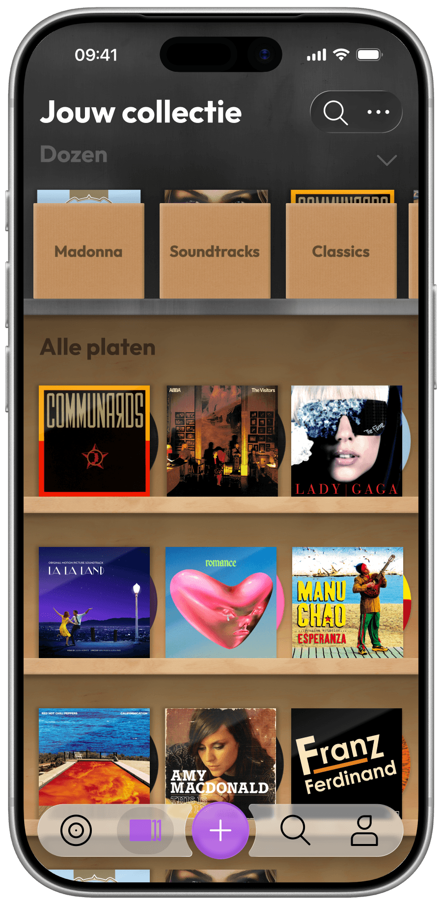
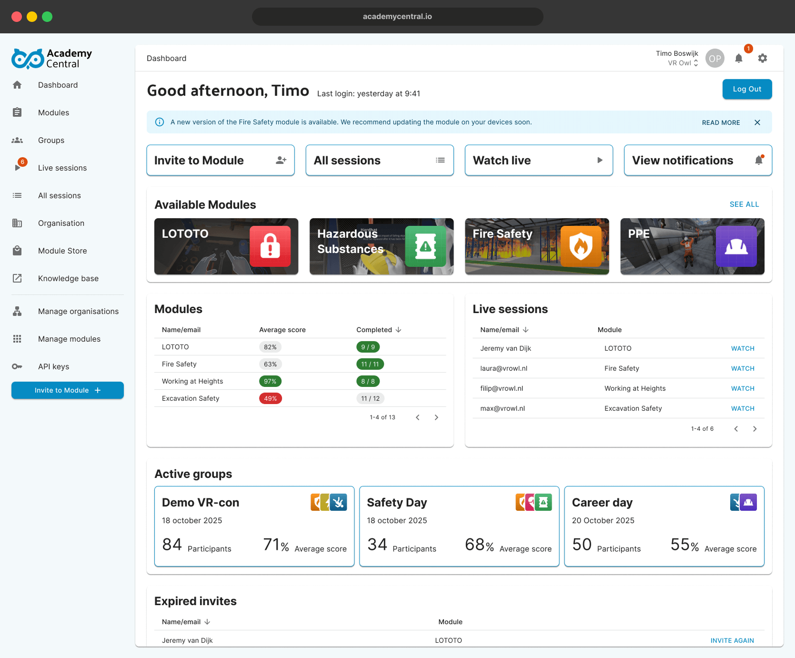
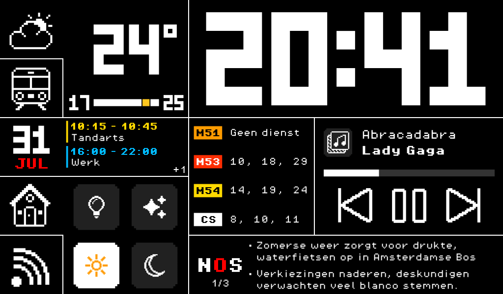
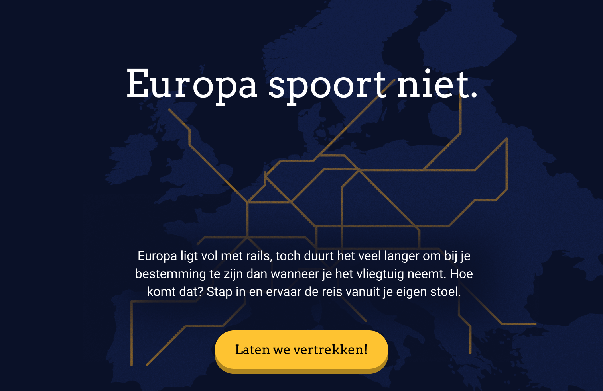
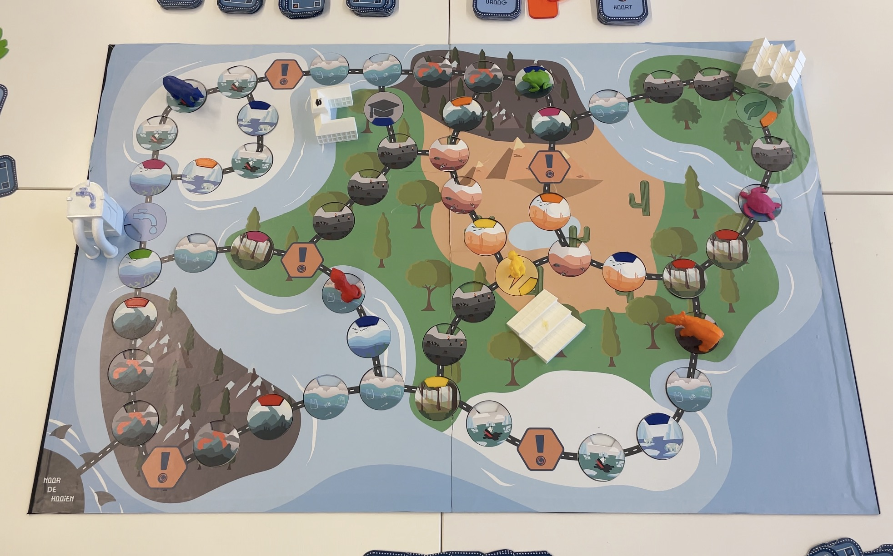
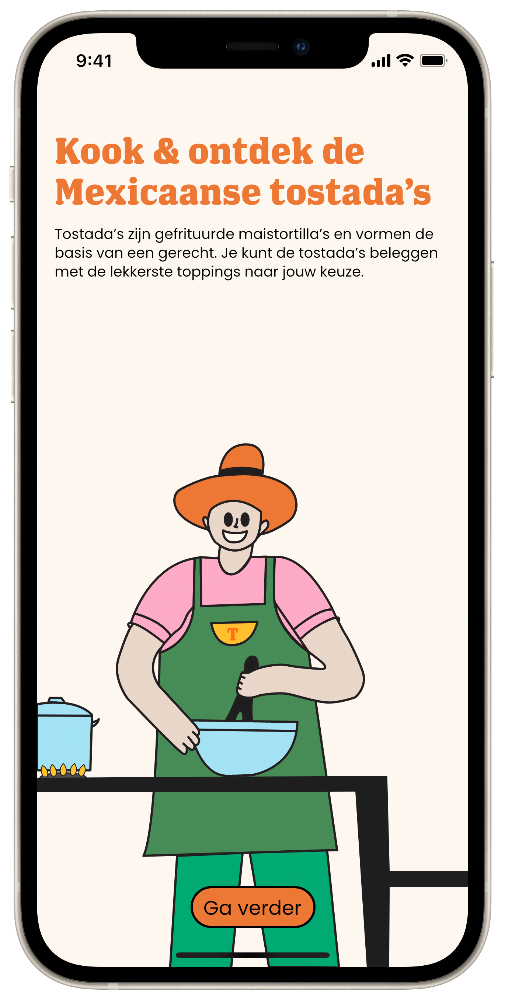
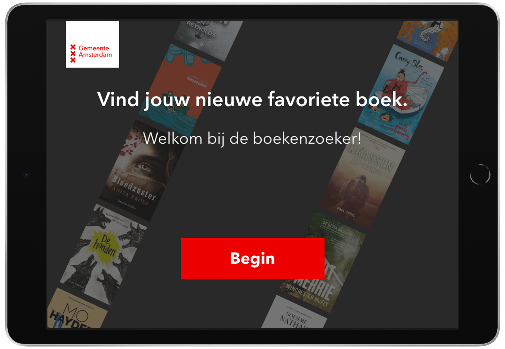

Hello, I'm Filip!
I'm an enthusiastic student at the Amsterdam University of Applied Sciences who is eager to learn and always puts his whole heart into his work. I'm currently in my fourth year of HBO Communication and Multimedia Design, specialising in visual interface design.
Trackstack
UX/UI
During my internship at VR Owl I designed and tested the user interface for Academy Central, an online platform for organisations to easily manage VR training modules.

Academy Central
UX/UI
During my internship at VR Owl I designed and tested the user interface for Academy Central, an online platform for organisations to easily manage VR training modules.

Built to Last.
UI Design
Silver award in Conscious Consumption
Built to Last is an app focused on making tech more fair. With unfair manufacturing and exploiting workers, tech is not built for our benefit. Built to Last helps users make informed decisions about their next purchase and increases awareness on the ethicality of the tech industry.

Home Dashboard
UI Design
Built to Last is an app focused on making tech more fair. With unfair manufacturing and exploiting workers, tech is not built for our benefit. Built to Last helps users make informed decisions about their next purchase and increases awareness on the ethicality of the tech industry.

Europa spoort niet
UI Design
The international European rail network has a lot of limitations, which make it unappealing for people to travel by train. This project increases awareness on the issues with the rail network in a fun story.

Climate Claim
UX/Product development
This project was all about following your passion. And that's what I did. With two other teammates, we created a new boardgame from scratch. The theme of this boardgame is to save the earth from climate change, tile by tile. The player who saves the most tiles of climate change, wins!

Tostada cooking-app
UX/UI
This group project was all about one single recipe, the Mexican tostada. The goal was to create a tostada-themed app that instructs users to cook a delicious tostada themselves.

De Boekenzoeker
UX/UI
De Boekenzoeker is an app that helps people find their perfect book. During this project, the primary focus was to implement an existing design system into an intuitive user interface suited for a tablet on a stand in a public library.
